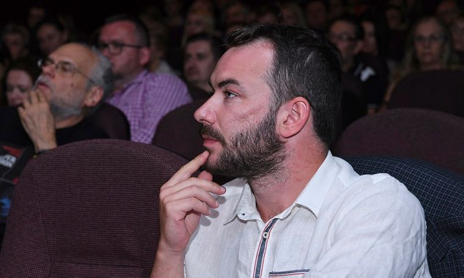
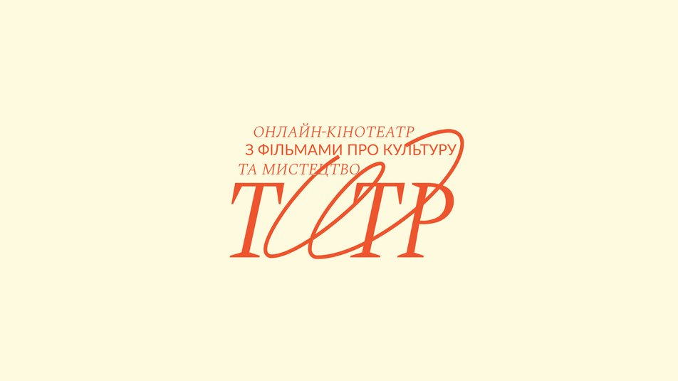
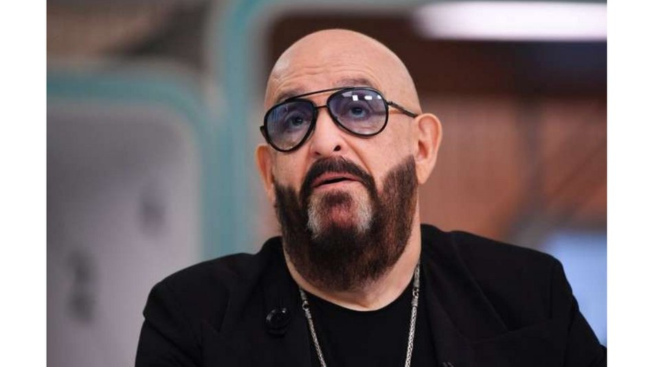
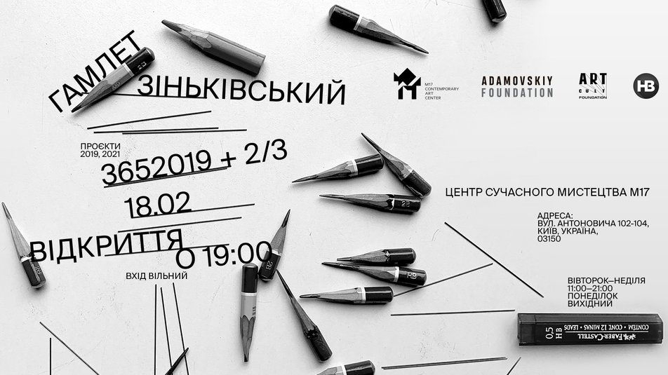
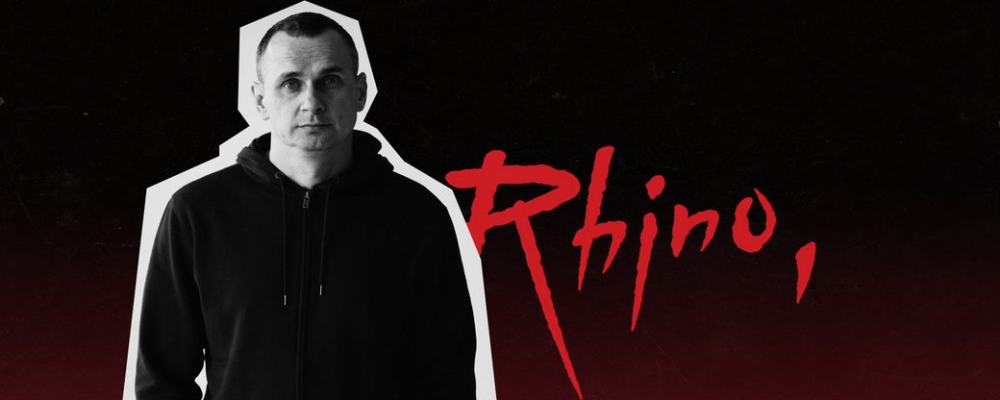

Член правління «Суспільного» позбувся посади після скандалу із відбором на «Євробачення»
Голову оргкомітету нацвідбору на Євробачення Ярослава Лодигіна звільнили з посади члена правління Суспільного мовлення.
Про це повідомив член наглядової ради та голова комітету з аудиту Суспільного мовлення Вадим Міський.
Чому звільнили?
Міський уточнив, що звільнення відбулося за згодою сторін. А до цього Лодигін заявляв, що після скандального відбору на «Євробачення» готовий подати у відставку, щоб підтвердити чисту репутацію «Суспільного».
Лодигіна зокрема критикували за низьку оцінку гурту Kalush Orchestra, яка вплинула на ім'я переможця нацвідбору. Своє рішення він тоді пояснив тим, що «ми вже декілька разів представляли себе як Україна, як українці, як такі люди з лісів».
Як зазначає «Суспільне», згодом він вибачився і сказав, що йому не вистачило точності у формулюванні. Каже, що не хотів критикувати людей родом з гірських місцевостей.
«Це метафора, якою я намагався пояснити свої відчуття від того, що побачив. У моїй оцінці мова йшла про відчуття того, як ми репрезентуємо Україну», — зазначив Лодигін.
Джерело: Hromadske
В Україні планують запустити нішевий онлайн-кінотеатр із фільмами про музику, моду та мистецтво
Наприкінці лютого в Україні запрацює онлайн-кінотеатр "Титр", у якому можна буде легально подивитися кіно про музику, моду, культуру та незалежні європейські стрічки.
Щоб подивитися фільм, передплату на сервіс оформлювати не потрібно, треба просто купити квиток на сайті.
Деталі
У доступі будуть близько 40 стрічок, серед яких: "Gimme Danger. Історія Іггі та The Stooges", "Неможливий проєкт", "Секс, мода, диско", "Рейв", "Берлінський фейсконтрольник", "Середина 90-х", "Вів'єн Вествуд: панк, ікона, активістка", "Жан-Поль Ґотьє: Freak&Chic", "Бенксі: мистецтво поза законом", "Гітлер проти Пікассо", "Гоген на Таїті. У пошуках втраченого Раю" та інші. Надалі бібліотеку фільмів планують постійно оновлювати.
"Титр" створила команда проєкту KyivMusicFilm. За майже десять років роботи вони показали українським глядачам роботи Міядзакі, документальні фільми про Маржелу та Макквіна, постановки британського театру, картину "Вусатий Фанк", класику світового кінематографа та багато інших стрічок.
Проєкт створений за підтримки Міжнародного фонду допомоги для організацій в сфері культури та освіти 2021 Федерального міністерства закордонних справ Німеччини, Goethe-Institut та інших партнерів.
Ідея проєкту виникла ще з початком пандемії — тоді весь світ переносив все з офлайну в онлайн. Ми спробували різні варіанти та врешті зрозуміли, що єдиний вдалий спосіб показувати наше кіно – це власний кінотеатр. Майже 2 роки пішло на те, щоб знайти можливість для створення платформи. Зараз ми нарешті робимо наші перші кроки", – говорять засновники "Титру".
Джерело: Suspilne
Шуфутинського не пускатимуть в Україну через незаконне відвідування окупованого Криму
Російський співак Михайло Шуфутинський у березні планував дати концерти в Києві, але тепер не зможе перетнути кордон України, оскільки отримав заборону на в’їзд за порушення законодавства. Тим не менш, його концерт не скасували й квитки досі у продажу.
Про заборону для Шуфутинського повідомив речник Держприкордонслужби Андрій Демченко в коментарі Укрінформу
Чому?
"Щодо особи, про яку ви запитуєте. У нас на даний момент є достатньо підстав вважати, що він неодноразово був у Криму, на тимчасово окупованій території, і під час спроби його в’їзду в Україну, оскільки ми також бачимо, що на березень анонсується його виступ в Україні, прикордонники обов’язково проведуть всі необхідні заходи безпосередньо в пункті пропуску. Якщо він з’явиться для перетину кордону і оскільки є певні підтвердження того, що він міг бути на окупованій території, у нас є підстави заборонити йому в’їзд в Україну", — сказав Демченко.
Він нагадав, що Держприкордонслужба в межах своїх повноважень постійно проводить роботу щодо встановлення, виокремлення людей, які порушували українське законодавство, зокрема, незаконно відвідуючи окуповані території. Ця робота проводиться ДПСУ як самостійно, так і у співпраці з іншими правоохоронними органами.
За словами речника ДПСУ, для громадян України передбачена адміністративна відповідальність у разі порушення перетину кордону, а для іноземців — адміністративна відповідальність і заборона в’їзду в Україну на 3 роки. Він додав, що рішення про дозвіл на в’їзд в Україну приймається виключно в пунктах пропуску під час безпосередньої спроби людини перетнути кордон.
Блогер і активіст Сергій Стерненко, коментуючи новину про заборону на в'їзд Шуфутинському, сказав, що вважає за необхідне повністю заборонити російським артистам гастролі в Україні і запровадити візовий режим із росіянами.
Джерело: Suspilne
У Центрі сучасного мистецтва М17 відбудеться виставка Гамлета Зіньківського
18 лютого о 19:00 в київському Центрі сучасного мистецтва М17 відбудеться відкриття виставки Гамлета Зіньківського “3652019 + ⅔”. Про це організація повідомила у пресрелізі.
Гамлет Зіньківський — художник, відомий своїми street-art роботами у рідному Харкові та далеко за його межами — представить проєкт, що фактично є особистим щоденником автора, в якому він зафіксував свої реакції на події 2019 та 2021 років.
Що там буде?
Назву виставки формують три числа: 365 — кількість днів у календарному році, 2019 — рік, на події якого реагує митець та ⅔ - розмір паперу, який він використав.
Виставка "⅔" складатиметься з 365 графічних робіт, які Зіньківський створив протягом 2021 року: "Один день, одна ситуація, одна робота".
"365 днів на папері ⅔ вміщують один рік. Розташовані на стінах з певним інтервалом, аркуші організовують простір спогаду. Втім, одноосібно кожен листок цього публічного щоденника митця є lieu de mémoire — місцем пам’яти", – повідомляють у М17.
Також 19 лютого о 15:00 відбудеться відкрита розмова з Гамлетом Зіньківським, під час якої художник розповість про події із свого життя та ідеї, які оповідають його візуальні щоденники – серії "3652019" та "2/3". Митець разом із директоркою ЦСМ М17 Наталією Шпитковскою відповість на запитання глядачів.
Джерело: Suspilne
У Києві відбулася прем‘єра фільму Сенцова “Носоріг”
У Києві в Будинку кіно у вівторок, 15 лютого, відбулася прем‘єра фільму “Носоріг” режисера Олега Сенцова. Про це повідомляє кореспондентка Суспільного.
Це перший фільм Сенцова, знятий після його звільнення з російського полону. Стрічку зняли у копродукції з Німеччиною та Польщею.
Хто відвідав прем'єру?
На прем‘єру прийшли, зокрема третій президент України Віктор Ющенко, п'ятий президент України Петро Порошенко.
Також прем'єрний показ відвідали народні депутати Гео Лерос, Сергій Рахманін, Іванна Климпуш-Цинцадзе, Ахтем Чийгоз, музикант Святослав Вакарчук, колишній очільник уряду Олексій Гончарук, ексміністерка охорони здоров'я Уляна Супрун і ексміністр фінансів Олексій Данилюк.
З 17 лютого стрічка виходить у прокат у 130 кінотеатрах України, розповів раніше Олег Сенцов.
У стрічці розповідається історія чоловіка на прізвисько "Носоріг", який потрапляє до кримінального світу у 1990-х роках. Головного героя зіграв Сергій Філімонов.
Джерело: Suspilne